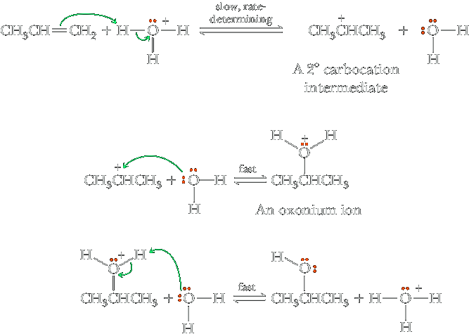

Addition of Water: Acid-Catalyzed Hydration
In the presence of an acid catalyst, most commonly concentrated sulfuric acid, water adds to an alkene to give an alcohol. The addition of water is called hydration.
 | + H2O | H2SO4 ⟶ |
(Isopropyl alcohol) |

| + H2O | H2SO4 ⟶ |  |
In the case of simple alkenes, H adds to the carbon of the double bond with the greater number of hydrogens, and OH adds to the carbon with the fewer hydrogens. Thus, H—OH adds to alkenes in accordance with Markovnikov’s rule. The mechanism for acid-catalyzed hydration of alkenes is quite similar to what we already proposed for addition of HCl, HBr, and HI to alkenes and is illustrated by conversion of propene to 2-propanol. As you study this mechanism, note that it is consistent with the fact that acid is a catalyst; an H3O+ is consumed in Step 1 but another is generated in Step 3.
Mechanism Acid-Catalyzed Hydration of Propene
Step 1: Make a new bond between a nucleophile (π bond) and an electrophile—add a proton. Addition of a proton to propene from H3O+ gives a 2° carbocation intermediate.
Step 2: Make a new bond between a nucleophile and an electrophile. The 2° carbocation intermediate (an electrophile) completes its valence shell by forming a new covalent bond with an unshared pair of electrons of the oxygen atom of water (a nucleophile) and gives an oxonium ion.
Step 3: Take a proton away. Loss of a proton from the relatively acidic oxonium ion to water gives the alcohol and generates a new acid catalyst.
Dehydration of Alcohols is the reverse reaction of acid-catalyzed hydration of alkenes.